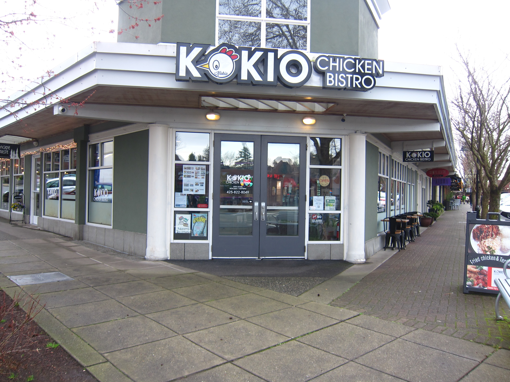

KTUB Operating Hours
| Day |
Hours |
| Monday |
2:30PM - 6:00 PM |
| Tuesday |
2:30PM - 6:00 PM |
| Wednesday |
1:00PM - 6:00 PM |
| Thursday |
2:30PMM - 6:00 PM |
| Friday |
2:30PM - 5:00 PM |
| Saturday |
Closed |
| Sunday |
Closed |
KTUB History
In 1996, at the Kirkland Youth Summit, hundreds of young individuals presented a mandate to the City stating
that
they wanted Kirkland to be a better place for them and their teen peers. An idea that came about was to open a
teen center for teens to hang out after school. In the summer of 2001, the KTUB facility was officially opened
to
the youth public of Kirkland.
In 2024, KTUB was reopened to the public once more after multiple years of rebuilding and renovations since the
COVID-19 pandemic.
Why does KTUB matter as a part of Kirkland's Community?
.JPG)
KTUB's mission is to provide a place that is "committed to uplifting teens' identities, voices, and their right
to
exist and thrive with dignity and respect in an inclusive, safe space." (from the City of Kirkland's webpage
about KTUB).
If you have a teen or are a teen, KTUB is a great place to connect with other teens. They offer multiple classes
after school, giving kids a time to connect with people who share the same interests as them.
For more information on these classes, click
here.
Seattle Youth Programs Operating Hours
| Day | Hours |
|---|
| Monday | 8:00 AM – 5:00 PM |
| Tuesday | 8:00 AM – 5:00 PM |
| Wednesday | 8:00 AM – 5:00 PM |
| Thursday | 8:00 AM – 5:00 PM |
| Friday | 8:00 AM – 5:00 PM |
| Saturday | Closed |
| Sunday | Closed |
Seattle Youth Programs History
Seattle Youth Programs grew out of the City of Seattle’s long-standing commitment to youth employment,
civic engagement, and community safety. Over the past several decades, the city expanded its offerings
to include internships, leadership development, job readiness training, and paid summer opportunities
for teens ages 14–24. These programs were strengthened after the 2008 recession and again after the
COVID-19 pandemic, when youth employment and mental-health needs increased significantly.
Why Seattle Youth Programs Matter
Seattle Youth Programs help teens build confidence, job skills, and community connections. They offer
paid internships, leadership opportunities, and pathways into city government and local organizations.
For teens looking to explore careers, gain work experience, or get involved in civic life, these
programs provide structured support and real-world learning.
King County Youth Services Operating Hours
| Day | Hours |
|---|
| Monday | 8:00 AM – 5:00 PM |
| Tuesday | 8:00 AM – 5:00 PM |
| Wednesday | 8:00 AM – 5:00 PM |
| Thursday | 8:00 AM – 5:00 PM |
| Friday | 8:00 AM – 5:00 PM |
| Saturday | Closed |
| Sunday | Closed |
King County Youth Services History
King County has offered youth-focused services for decades, originally centered on juvenile justice
and family support. Over time, the county expanded into mental-health care, substance-use prevention,
crisis intervention, and wraparound services for teens and families. After 2020, the county increased
funding for behavioral-health support and community-based youth programs to address rising
mental-health needs.
Why King County Youth Services Matter

King County Youth Services provide essential support for teens facing mental-health challenges,
family conflict, or instability. Their programs help youth access counseling, crisis response, and
long-term support systems. For teens who need more than recreational programming, these services
offer safety, stability, and professional care.
YMCA Teen Programs Operating Hours
| Day | Hours |
|---|
| Monday | 6:00 AM – 9:00 PM |
| Tuesday | 6:00 AM – 9:00 PM |
| Wednesday | 6:00 AM – 9:00 PM |
| Thursday | 6:00 AM – 9:00 PM |
| Friday | 6:00 AM – 8:00 PM |
| Saturday | 8:00 AM – 6:00 PM |
| Sunday | 9:00 AM – 5:00 PM |
YMCA Teen Programs History
The YMCA has served youth for over 150 years, with teen-specific programs expanding significantly in
the late 20th century. In the Seattle area, the YMCA developed leadership programs, after-school
activities, outdoor education, and service-learning opportunities. Their Earth Service Corps,
launched in the 1990s, became one of the region’s most influential youth environmental-leadership programs.
Why YMCA Teen Programs Matter
YMCA programs give teens a place to grow socially, emotionally, and physically. They offer leadership
training, volunteer opportunities, outdoor adventures, and safe after-school spaces. Teens can explore
interests, build friendships, and develop confidence in a supportive environment.
Teen Feed Operating Hours
| Day | Hours |
|---|
| Monday | 6:30 PM – 7:30 PM |
| Tuesday | 6:30 PM – 7:30 PM |
| Wednesday | 6:30 PM – 7:30 PM |
| Thursday | 6:30 PM – 7:30 PM |
| Friday | 6:30 PM – 7:30 PM |
| Saturday | 6:30 PM – 7:30 PM |
| Sunday | 6:30 PM – 7:30 PM |
Teen Feed History
Teen Feed began in 1987 in Seattle’s University District as a grassroots effort to support homeless
and unstably housed youth. Volunteers, local churches, and community groups came together to provide
nightly meals and safe spaces. Over time, Teen Feed expanded to include case management, healthcare
connections, and long-term support for young adults ages 13–25.
Why Teen Feed Matters
.JPG)
Teen Feed provides consistent meals, safety, and trust for youth experiencing homelessness. It offers
stability, caring adults, and access to essential services. For teens in crisis, Teen Feed is often
the first step toward long-term support, housing, and health resources.
Mountaineers Youth Programs Operating Hours
| Day | Hours |
|---|
| Monday | 9:00 AM – 5:00 PM |
| Tuesday | 9:00 AM – 5:00 PM |
| Wednesday | 9:00 AM – 5:00 PM |
| Thursday | 9:00 AM – 5:00 PM |
| Friday | 9:00 AM – 5:00 PM |
| Saturday | Program-dependent |
| Sunday | Program-dependent |
Mountaineers Youth Programs History
The Mountaineers, founded in 1906, began offering youth outdoor education in the mid-20th century.
Their programs expanded significantly in the 2000s with the introduction of summer camps, climbing
clubs, and leadership pathways for teens. Today, they serve thousands of youth annually through
outdoor skills training, environmental education, and adventure-based learning.
Why Mountaineers Youth Programs Matter
.JPG)
These programs help teens build confidence, resilience, and environmental awareness through hands-on
outdoor experiences. Teens learn climbing, hiking, navigation, and stewardship while forming strong
peer connections. For youth who thrive in nature or want to develop leadership through adventure,
The Mountaineers offer a unique pathway.